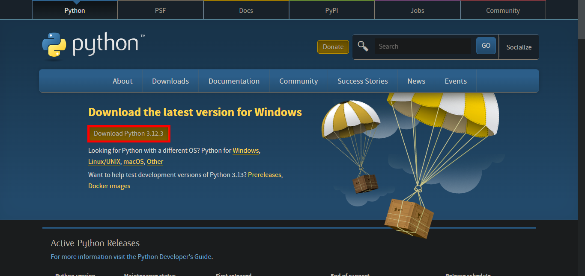
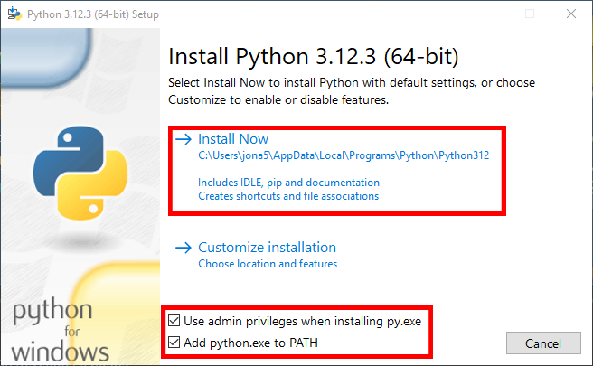
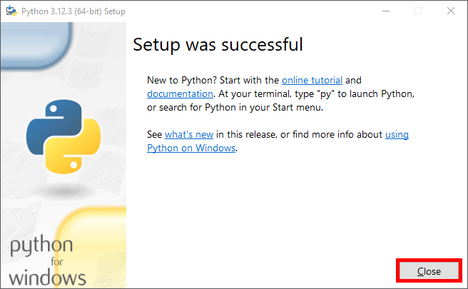
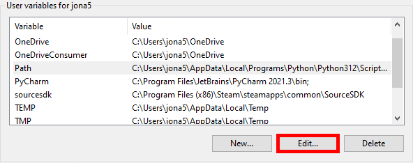
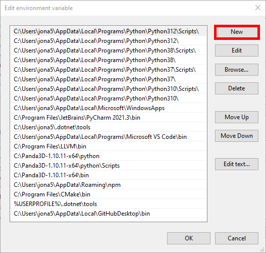
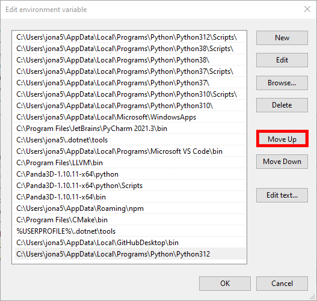
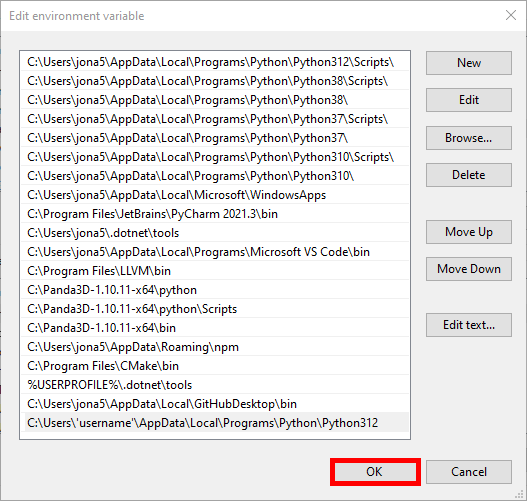
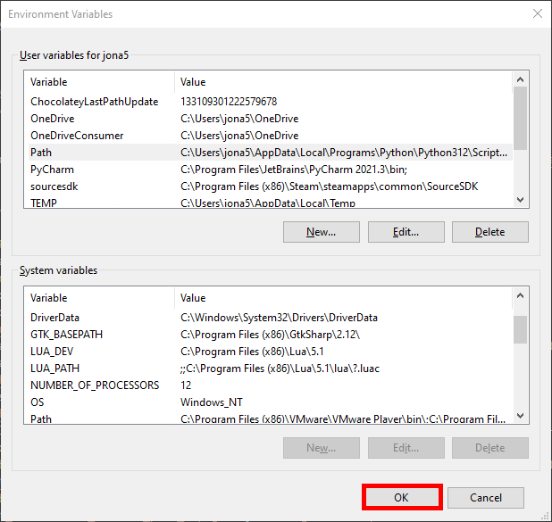
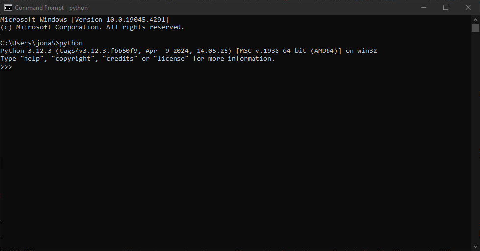

Getting Started
What is Python?
Python is a simple dynamic programming language that is used by many. It's a good language to for new programmers because of it's simplicity and large community.
What can Python do?
Python can do almost anything. you can make games using PyGame, websites using Django or Flask.
How do i install Python?
you need to install Python on your computer.
there are multiple ways to do so but the easiest is to download it in the Microsoft Store.
if your on a different operating system or can't download it in the Microsoft Store.
you can always download it on their website: python.org.
press the highlighted download button:

once the Python installer has finished installing. open it. if you have admin privileges. make sure to check the 2 checkboxes highlighted in red.
then press the "Install Now" button which will also be highlighted in red.

once Python has finished installing. press the "Close" button highlighted in red.

if you didn't install Python with admin privileges. you might still be able to add Python to the PATH.
to do so. you have to type "Edit environment varibles for your account" into the search field in the taskbar and hit enter.
now under "User varibles for 'your_account'" find the varible called "Path" and press the "Edit" button which will be highlighted in red.

now press the "New" button highlighted in red.

now we will need the path to the Python folder. most likely it will be this one "C:\Users\'username'\AppData\Local\Programs\Python\Python312".
now paste the path into the PATH varible and make sure to replace 'username' with your account's username.
now press the "Move Up" button highlighted in red until it's at the top. this prevents the Microsoft Store from opening when we test it.

once you have done that. hit enter and click the "OK" button highlighted in red.

now press the other "OK" button which will be highlighted in red.

to make sure that Python was added to the PATH. type "cmd" into the search field in the taskbar and hit enter.
this will open Command Prompt where we can then type "python" and hit enter. Command Prompt should give you this response:
